因子逻辑#
处置效应，即投资者存在“浮盈时及早兑现账面收益，而浮亏时抵触出售确认亏损”的行为倾向。前景理论结合心理账户能较好的解释这一行为的背后原因。处置效应可能导致资产价格在对新增信息定价过程的反应迟滞现象。我们可以利用这一现象进一步筛选投资标的，增强事件投资收益。同时我们认为前期的账面收益是影响因子后续表现的重要前置条件，加以利用也可能增强因子组合收益。
前景理论、心理账户与处置效应#
前景理论（Prospect Theory）
Kahneman和Tversky提出的前景理论主要用于描述和预测人们在面临风险决策过程中表现与传统期望值理论和期望效用理论不一致的行为解释。它在传 统金融学里引入心理学的研究成果，试图从人的心理偏误，也就是非理性的角 度来理解金融现象，对传统的效用函数进行修正。前景理论当中有以下几点要素：
参照点：在投资收益确定的情况下，在与其他人对比的时候，会出现完全不一样的感受。在期望效用理论中，满足感不会有任何区别。
损失厌恶：损失 100 块钱的疼痛度大于收获 100 块钱的愉悦程度。
风险偏好的非对称性：传统的期望效用理论认为无论是在面对损失或是面对收益的情况下，投资者都是风险厌恶的，但一假设并不符合投资中的实际情况。 为了增进理解，考虑以下两个场景：
A. 80%的可能获得4000元 v.s 100%的机会获得3000元
B. 80%的可能亏损4000元 v.s 100%亏损3000元问题 A中选择后者的多，问题B中选择前者的多。但事实上A问题前者的期望收益更高，B问题后者的期望损失更少。
两个对比可以看到投资者偏好的是确定的收益，落袋为安更重要；已经亏损时，相较于确定的损失，不如赌一把。因此根据前景理论，投资者面对收益是风险厌恶的，面对损失是风险偏好的。
**心智账户（Mental Accounting） **
“心智账户”是人们在心理上对结果（尤其是经济结果）的编码、分类和估价的过程，它揭示了人们在进行（资金）财富决策时的心理认知过程。心智账户理论包含了一系列规则，其中最为重要也与本文相关的规律在于：
当行为人面临两件对其财富产生损益的事件时，会单独衡量每一件事而并 不是作为一个整体看待。也就是说即便是针对组合的投资决策，人们通常 也只针对单一证券进行分析，而不受组合或组合内其他证券当前情况的影响。 这一规则方便我们在探讨单只股票投资决策时，不需要考虑市场上其他股票的盈利状况。
抛售掉的股票亏损和没有被抛掉的股票亏损就被放在不同的心理账户中， 抛售之前是账面上的亏损，而抛售之后是一个实际的亏损，客观上讲，这 两者实质上并没有差异，但是在心理上人们却把它们划上了严格的界限。 从账面亏损到实际亏损，后者在心理账户中感觉更加“真实”，也就更加让 人痛苦，所以这两个账户给人的感觉是不同的，人们并不能从心理上把二者完全等同起来。 这一规则为前景理论中风险偏好的非对称性提供心理学依据。
处置效应（Disposition Effect）
处置效应是指投资者存在过早锁定收益以及规避实际损失的倾向。前景理论及心理账户规则一定程度上可以解释处置效应。 投资者持有A股票，当前相对买入价格已有10块钱浮盈，接下来股价可能涨10块也有可能跌10块，各 50%概率。由于收益端的效用函数是凸函数，当下卖出股票锁定收益的效用大于持有至下期的期望效用。投资者自然会选择使得效用更大的策略进行交易。
类似的，如果某投资者持有股票目前账面亏损10元，下个月涨跌幅10元的概率各50%。由于在效用函数为凸函数，立刻抛售确定亏损的效用是低于两种情 况下的分别求得效用的期望的。因此投资者会选择持有至下期而非立刻抛售股票的。
理论运用#
参考价格（Reference Price）
客观地说，因为每个人每只股票的投资成本无法获知，投资者的盈亏状态是很难精 确刻画的。我们可以认为每个投资者都有一个心理价位，跌破这个心理价位或者突 破这个心理价位都可能对投资者之后的行为产生影响。同一只股票出现大量的群体 行为势必会影响这只股票今后的走势，所以对每一只股票定义一个统一的参考价格十分有必要，而且定义这个心理价位或者说参考价格一定要反映足够的市场变化的信息。许多个人投资者喜欢依照均线设定自己的止损位或者止盈位，他们的交易行为依照均线变动而发生决策。从某种意义上来说，均线就是一种参考价格。但是均 线只包含了价格变动的信息，没有成交量、换手率等信息；而且均线数据有很大的噪音，基于收盘价计算的日均线容易被少数人在尾盘操纵股价造成数据失真。
Grinblatt（2005）针对美国股市，以260周为周期，提出以周换手率加权平均的周成 交均价作为个股的参考价格。考虑A股市场的短线交易者众多，我们重新定义以100日为周期的，以日换手率加权的日成交均价定义参考价格（RP）：
式子中的k为权重归一化系数，为过去第t-n日的成交均价，为换手率。采用前复权价格计算。
参考价格的计算是过去100日的成交均价按照换手率衰减加权形成的平均价格。可以这样理解这个求和式：如果第t日的换手率是\(V_t\),则第t日被成交的股票数量就占流通股本\(V_t\)*100%,如果第t+1日的换手率是\(V_{t+1}\)，那么可以认为第t日买入的人中(1-\(V_{t+1}\))*100% 的在第t+1日仍然持有这只股票。并且他们的成本价近似是第t日成交均价\(P_t\)。那么以该股流通股本的比例计算，这部分股票就占\(V_t*(1-V_{t+1})*100%\) 。这个公式中连乘部分使得权重是随时间衰减的。如果当天换手率较大，之后 换手率越小，则携带的信息对未来越有效，这一天的成交均价在求和式子中的权重 越大。反之，如果以后的换手率越大，则当天携带的信息对投资者未来的参考意义 越小，这一天在整个求和式中的权重也越小。
资本利得突出量（Capital Gain Overhang）
为了表示当前表示当前股价运行相对于参考价格的位置，我们在Grinblatt（2005） 的基础上，重新定义了资本利得突出量（CGO）。 $\(CGO_t=\frac{P_{close,t-1}-RP_t}{RP_t}\)$
式子中\(P_{close,t-1}\)表示个股昨日收盘价，\(CGO_t\)表示股票投资者相对于参考价格的平均浮盈浮亏情况。
自定义函数#
因子构造#
import sys
sys.path.append('../..')
from BuildPeriodicDate import *
import numpy as np
import pandas as pd
import alphalens as al
from dateutil.parser import parse
from tqdm import tqdm_notebook
from scipy import stats # 统计检验
import statsmodels.api as sm # 回归
from jqdata import *
from jqfactor import (analyze_factor,Factor,calc_factors)
from pylab import mpl
import seaborn as sns
import matplotlib.pyplot as plt
plt.rcParams['font.family'] = 'serif'
# 用来正常显示负号
plt.rcParams['axes.unicode_minus'] = False
plt.style.use('seaborn')
# 这个应该是计算RP的核心部分
def calc_turnover_weight(arr: np.array) -> np.array:
'''换手率衰减加权'''
arr_ = arr.copy()
arr_[0] = 0
return np.multiply(np.cumprod(np.subtract(1, np.roll(arr_, -1))[::-1])[::-1], arr)
def calc_rp(turnover:pd.DataFrame,ma_avg:pd.DataFrame)->pd.Series:
'''
计算参考价格
'''
# 换手率衰减加权 这个位置决定了无法滚动 这里传入的数据长度N计算处理的就是N日的CGO
turnover_weighs = turnover.apply(calc_turnover_weight)
# 归一化
scale_weights = turnover_weighs / turnover_weighs.sum()
return (scale_weights * ma_avg).sum() # 参考价格
def calc_roll_rp(df:pd.DataFrame,N:int) ->pd.DataFrame:
'''
计算roll_N日的参考价格
---------------
传入的df数据结构必须为
df:index-date columns level0-close,ma_avg,turnover_ratio,level1-code
------------------------------------------------------------
| | close | avg | turnover_ratio|
| day |code1|code2|...|code1|code2|...|code1|code2|...|
------------------------------------------------------------
|2020-11-01| 0.1 | 0.3 |...| 0.3 | 0.5 |...|0.03 | 0.9 |...|
------------------------------------------------------------
'''
iidx = np.arange(len(df))
shape = (iidx.size - N + 1, N)
strides = (iidx.strides[0], iidx.strides[0])
step = np.lib.stride_tricks.as_strided(
iidx, shape=shape, strides=strides, writeable=True)
turnover = df['turnover_ratio']
ma_avg = df['avg']
rp_df = pd.concat((calc_rp(turnover.iloc[i],ma_avg.iloc[i]) for i in step),axis=1).T
rp_df.index = df.index[N-1:]
return rp_df
def calc_cgo(df:pd.DataFrame,N:int) -> pd.DataFrame:
'''
计算CGO因子
传入的如果是N日的则计算N日的CGO
-----------
传入的df数据结构必须为
df:index-date columns level0-close,ma_avg,turnover_ratio,level1-code
------------------------------------------------------------
| | close | avg | turnover_ratio|
| day |code1|code2|...|code1|code2|...|code1|code2|...|
------------------------------------------------------------
|2020-11-01| 0.1 | 0.3 |...| 0.3 | 0.5 |...|0.03 | 0.9 |...|
------------------------------------------------------------
-----------
return:
pd.Series index-code values
'''
rp_df = calc_roll_rp(df,N)
close = df['close'].reindex(rp_df.index)
return close / rp_df - 1,rp_df
数据获取#
# 获取市值数据
# 绕过1W的数据限制
# 经测试发现比直接用offset快
def query_valuation(symbol: list,
start_date: str,
end_date: str,
fields: list,
limit=10000) -> pd.DataFrame:
n_symbols = len(symbol)
dates = get_trade_days(start_date, end_date)
n_days = len(dates)
if n_symbols * n_days > limit:
n = limit // n_symbols
df_list = []
i = 0
pos1, pos2 = n * i, n * (i + 1) - 1
while pos2 < n_days:
df = get_valuation(
symbol,
start_date=dates[pos1],
end_date=dates[pos2],
fields=fields)
df_list.append(df)
i += 1
pos1, pos2 = n * i, n * (i + 1) - 1
if pos1 < n_days:
df = get_valuation(
symbol,
start_date=dates[pos1],
end_date=dates[-1],
fields=fields)
df_list.append(df)
df = pd.concat(df_list, axis=0)
else:
df = get_valuation(
symbol, start_date=start_date, end_date=end_date, fields=fields)
return df
# 获取CGO因子
def prepare_data(symbol: str, start: str, end: str, N: int) -> pd.DataFrame:
'''CGO因子获取'''
periods = GetPeriodicDate(start, end).get_periods # 获取调仓片段
cgo_list = [] # 储存切片
rp_list = []
for s, e in tqdm_notebook(periods, desc='CGO因子计算中'):
begin = get_trade_days(end_date=s, count=N)[0].strftime('%Y-%m-%d')
stocks = get_index_stocks(symbol, date=e) # 成分股获取
df = query_data(stocks, begin, e, N) # 数据获取
f, r = calc_cgo(df, N)
cgo_list.append(f)
rp_list.append(r)
factor_df = pd.concat(cgo_list, sort=True) # 拼接
rp_df = pd.concat(rp_list, sort=True)
return factor_df, rp_df
# 获取CGO因子-step1
def query_data(stocks: list, start: str, end: str, N: int) -> pd.DataFrame:
'''
获取计算CGO因子的基础数据
---------
stocks:list
N:计算均线的周期
--------
返回的数据结构如下
------------------------------------------------------------
| | close | avg | turnover_ratio|
| day |code1|code2|...|code1|code2|...|code1|code2|...|
------------------------------------------------------------
|2020-11-01| 0.1 | 0.3 |...| 0.3 | 0.5 |...|0.03 | 0.9 |...|
------------------------------------------------------------
'''
price = get_price(stocks, start, end, fields=['close', 'avg'], panel=False)
# 获取换手率数据
turn_df = query_valuation(
stocks, start, end, fields=['turnover_ratio'])
turn_df['turnover_ratio'] = turn_df['turnover_ratio'] / 100
# 调整数据类型
turn_df['day'] = pd.to_datetime(turn_df['day'])
# 修改名称方便后续拼接
turn_df.rename(columns={'day': 'time'}, inplace=True)
# 数据拼接
data = pd.merge(turn_df, price, on=['time', 'code'], how='right')
data.sort_values('time', inplace=True)
data.reset_index(drop=True, inplace=True)
# .iloc[N-1:] # 去除计算ma_avg的前序期
return data.pivot(index='time', columns='code')
def plot_nav(nav: pd.DataFrame, title: str):
'''
画图
---------
nav数据结构
-------------------------------------
| date | 1 | 2 | 3 | 4 | 5 |
-------------------------------------
|2020-01-01|0.01|0.02|0.14|-0.2|0.08|
-------------------------------------
|2020-01-02|0.11|-0.2|-0.1|0.33|0.10|
-------------------------------------
'''
plt.rcParams['font.family'] = 'serif'
fig, ax = plt.subplots(figsize=(18, 6))
# 设置标题
plt.title(title)
# 1,5组设置不同的颜色和线型方便查看单调性
ax.plot(nav[1.], color='Navy')
ax.plot(nav[2.], color='LightGrey', ls='-.')
ax.plot(nav[3.], color='DimGray', ls='-.')
ax.plot(nav[4.], color='DarkKhaki', ls='-.')
ax.plot(nav[5.], color='LightSteelBlue')
ax.axhline(1, color='black', lw=0.5)
# 多空单独反应
ax1 = ax.twinx()
ax1.plot(nav['G1-G5'], color='r', ls='--')
ax1.grid(None)
# 图例合并
h1, l1 = ax.get_legend_handles_labels()
h2, l2 = ax1.get_legend_handles_labels()
l2 = [l2[0] + '(right)']
ax.legend(h1+h2, l1+l2)
直接使用Factor构造#
class CGO_100(Factor):
'''计算窗口为100的CGO因子'''
import warnings
warnings.filterwarnings("ignore")
name = 'CGO_100'
max_window = 100
dependencies = ['close','turnover_ratio','money','volume']
def calc(self,data):
avg = data['money'] / data['volume'] # 数据索引不是日期!!!
turnover = data['turnover_ratio'] / 100
turnover_weighs = turnover.apply(calc_turnover_weight)
# 归一化
scale_weights = turnover_weighs.div(turnover_weighs.sum())
avg.index = scale_weights.index # 设置索引
rp_price = (scale_weights * avg).sum() # 参考价格
return data['close'].iloc[-1] / rp_price - 1
class RP_100(Factor):
'''计算窗口为100的参考价格(Reference Price)'''
name = 'CGO_100'
max_window = 100
dependencies = ['close','turnover_ratio','money','volume']
def calc(self,data):
avg = data['money'] / data['volume'] # 数据索引不是日期!!!
turnover = data['turnover_ratio'] / 100
turnover_weighs = turnover.apply(calc_turnover_weight)
# 归一化
scale_weights = turnover_weighs.div(turnover_weighs.sum())
avg.index = scale_weights.index # 设置索引
return (scale_weights * avg).sum() # 参考价格
# 除非你真的很闲 不然真不建议 这样直接运行 因为你可能会等很久....
# far = analyze_factor(factor=CGO_100,
# start_date='2014-01-01',
# end_date='2020-11-30',
# industry='sw_l1',
# universe='000906.XSHG',
# quantiles=5,
# periods=(5,22),
# weight_method='avg',
# use_real_price=True,
# skip_paused=True)
因子获取#
时间段：2014-01-01至2020-11-30
股票池：中证800成份股
CGO计算窗口:计算窗口为100
# 用时17min15s
cgo_df,rp_df = prepare_data('000906.XSHG','2010-01-01','2020-11-30',100)
# 因子储存
cgo_df.to_csv('../../Data/cgo_df.csv')
rp_df.to_csv('../../Data/rp_df.csv')
# 因子读取
cgo_df = pd.read_csv('../../Data/cgo_df.csv',index_col=[0],parse_dates=[0])
rp_df = pd.read_csv('../../Data/rp_df.csv',index_col=[0],parse_dates=[0])
因子分析#
CGO中位数截面分布为左偏，但与研报不同左偏并不那么明显(偏度为-0.167)，说明中国股市牛短熊长；而全空间样本CGO分布(左图)则说明个股方面投资者也是亏多盈少。
# 去除na
drop_cgo_df = cgo_df.stack().replace([-np.inf, np.inf], np.nan).dropna()
plt.rcParams['font.family'] = 'serif'
plt.figure(figsize=(12, 4))
plt.subplot(121)
plt.title('全空间样本的CGO分布')
sns.distplot(drop_cgo_df)
plt.subplot(122)
plt.title('CGO中位数截面分布')
sns.distplot(drop_cgo_df.groupby(level='time').median())
<matplotlib.axes._subplots.AxesSubplot at 0x7f4ac66a9390>
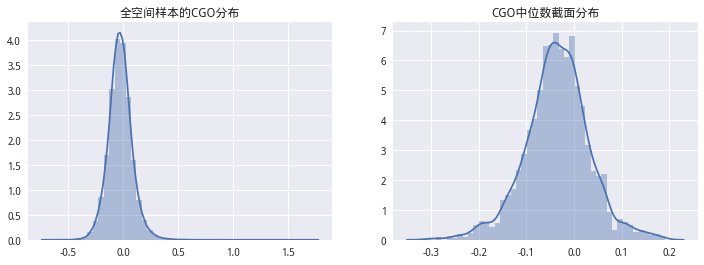
我们统计了历史时点中证800成份股中，CGO大于0的股票比例，该值随着市场涨跌切换波动较大。这与我们所选的计算CGO参数（100天）有关。反应了市场较为短线的波动情况。
# 中证800成分股中CGO大于零的股票的比例
count_num_1 = drop_cgo_df.groupby(level='time').apply(
lambda x: np.sum(~np.signbit(x)) / len(x))
start = count_num_1.index.min().strftime('%Y-%m-%d')
end = count_num_1.index.max().strftime('%Y-%m-%d')
# 中证800成分股的CGO中位数的序列
count_num_2 = drop_cgo_df.groupby(level='time').median()
# 基准
benchmark = get_price('000906.XSHG', start, end, fields='close')
plt.figure(figsize=(12, 8))
# 画图1
plt.subplot(211)
line = benchmark['close'].plot(
color='DarkGray', label='中证800', title='中证800成分股中CGO大于零的股票的比例')
out = count_num_1.plot(secondary_y=True, ax=line,
color='LightCoral', label='CGO大于0的比率')
h1, l1 = line.get_legend_handles_labels()
h2, l2 = out.get_legend_handles_labels()
l2 = [l2[0] + '(left)']
plt.legend(h1+h2, l1+l2, loc=1)
# 画图2
plt.subplot(212)
line = benchmark['close'].plot(
color='DarkGray', label='中证800', title='中证800成分股的CGO中位数的序列')
out = count_num_2.plot(secondary_y=True, ax=line,
color='LightCoral', label='CGO中位数')
h1, l1 = line.get_legend_handles_labels()
h2, l2 = out.get_legend_handles_labels()
l2 = [l2[0] + '(left)']
plt.legend(h1+h2, l1+l2, loc=1)
<matplotlib.legend.Legend at 0x7f4ad660b358>
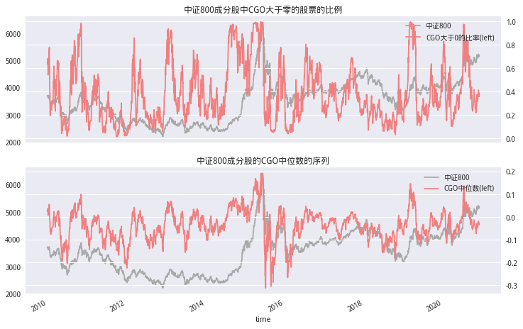
股价序列处于上涨时，不同换手率变化会导致CGO不同的变化。如果前期上涨时换 手率很低（如一字涨停板），则将导致CGO序列迅速上升。如果人们对股价的未来 上涨预期产生了分歧，股价上涨但是换手率也增加地很快，这将导致CGO序列下降。 因为近期的换手率权重大，导致了参考价格上升得比收盘价上升的快。由于获利盘 处置效应的存在，CGO序列如果在快速上涨后突然下降则可能预示着股价顶部的来 临。
股价在下跌通道中，CGO也会伴随着股价下跌。对于急剧下跌探底的过程中，由于 惜售效应存在，投资者换手急剧下降，CGO指标更多反应的是高位持有者浮亏，因 此指标弹性更大，会下降地更剧烈。当缩量震荡一段时间后，随着换手率逐渐变大， 市场情绪的修复，CGO公式中前期交易数据的权重在衰减，近期交易信息的权重变 大，弹性缩小，股价容易走出反弹行情。
price = get_price('000001.XSHE','2017-10-01','2018-01-01',fields='close')
test_cgo = drop_cgo_df.xs('000001.XSHE',level=1)
price_line = price['close'].plot(figsize=(6,4),color='r')
out = test_cgo.reindex(price.index).plot(ax=price_line,secondary_y=True,label='CGO')
h1,l1 = price_line.get_legend_handles_labels()
l1 = [l1[0]+'(left)']
h2,l2 = out.get_legend_handles_labels()
plt.legend(h1 + h2,l1 + l2)
<matplotlib.legend.Legend at 0x7f4ad80659b0>
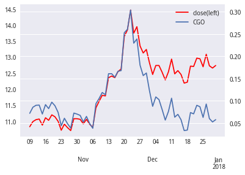
# 起始日向前推5日 结束日向后推15日 预留后期分析空间
start = cgo_df.index.min().strftime('%Y-%m-%d')
start = OffsetDate(start,-5)
end = cgo_df.index.max().strftime('%Y-%m-%d')
end = OffsetDate(end,15)
stocks = cgo_df.columns.tolist()
pricing = get_price(stocks,start,end,fields='close',panel=False)
pricing = pd.pivot_table(pricing,index='time',columns='code',values='close')
# 周度所以periods=5 pricing数据滞后一期 避免未来数据
# 因子排序为升序
factor_far = al.utils.get_clean_factor_and_forward_returns(factor=drop_cgo_df,
prices=pricing.shift(-1),
quantiles=5,
periods=(5,))
Dropped 0.0% entries from factor data (0.0% after in forward returns computation and 0.0% in binning phase). Set max_loss=0 to see potentially suppressed Exceptions.
factor_far.head()
| 5 | factor | factor_quantile | ||
|---|---|---|---|---|
| date | asset | |||
| 2009-12-31 | 000001.XSHE | -0.046936 | 0.050151 | 4 |
| 000002.XSHE | -0.039318 | -0.064289 | 1 | |
| 000005.XSHE | -0.028381 | -0.002363 | 2 | |
| 000006.XSHE | -0.035928 | -0.075235 | 1 | |
| 000009.XSHE | 0.019068 | -0.093569 | 1 |
可以观察到，周度层面CGO呈现显著的负IC(折线图大部分在0轴一下,表IC Mean也为负)。说明在中证800成分股中低CGO的股票在未来有较强的正向超额收益。由于之前我们对CGO的统计特征做分析发现，CGO在全体成分股中的中位数变化剧烈，所以我们按照CGO大小排序选择设计周度换仓策略。每周最后一个交易日进行换仓，对中证800成分股划分五档构建五个分位数组合，测算结果发现：按照CGO划分的分位数组合有着明显收益率区分，最低的CGO分位数组合表现最好。
cgo_5_ic = al.performance.factor_information_coefficient(factor_far)
cgo_5_ic.columns = ['CGO']
al.plotting.plot_information_table(cgo_5_ic)
al.plotting.plot_ic_ts(cgo_5_ic)
Information Analysis
| CGO | |
|---|---|
| IC Mean | -0.033 |
| IC Std. | 0.184 |
| Risk-Adjusted IC | -0.180 |
| t-stat(IC) | -9.272 |
| p-value(IC) | 0.000 |
| IC Skew | -0.099 |
| IC Kurtosis | 0.108 |
array([AxesSubplot(0.125,0.2;0.775x0.68)], dtype=object)
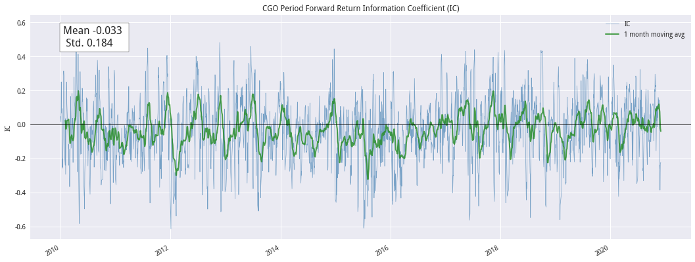
# 计算分组收益
rets = pd.pivot_table(factor_far.reset_index(level=0),
index='date', columns='factor_quantile', values=5)
rets['G1-G5'] = rets[1] - rets[5]
nav = np.exp(np.log1p(rets).cumsum()) # 计算净值
plot_nav(nav,'中证800内CGO分位数组合')
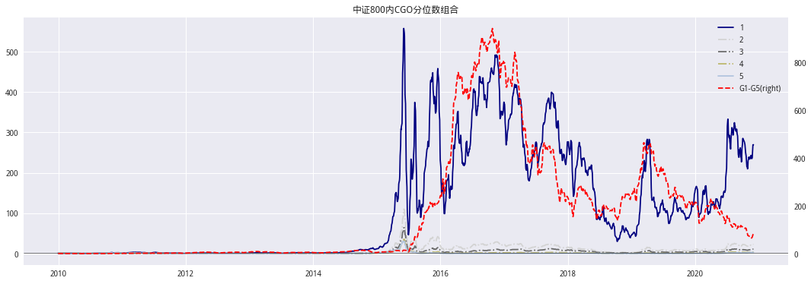
可以看到因子收益单调性很好
# demeand参数在截面上对所有的股票收益率做demean处理
# 也称为中心化（Zero-centered 或者 Mean-subtraction）
mean_quant_ret, std_quantile = al.performance.mean_return_by_quantile(
factor_far,
by_group=False,
demeaned=True,
group_adjust=False, # 是否行业中性化
)
mean_quant_ret.plot.bar(title='因子收益：分组平均超额收益（收益中心化处理）')
<matplotlib.axes._subplots.AxesSubplot at 0x7f4ac225fac8>
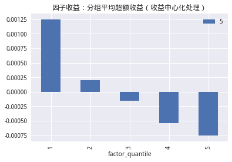
CGO与其他传统因子相关性#
import talib
from jqfactor import get_factor_values
def query_other_factor(symbol: str, start: str, end: str) -> pd.DataFrame:
periods = GetPeriodicDate(start, end).get_periods # 获取调仓片段
df_list = []
for s, e in tqdm_notebook(periods, desc='因子获取中'):
s, e = s.strftime('%Y-%m-%d'), e.strftime('%Y-%m-%d')
begin = get_trade_days(end_date=s, count=28)[0].strftime('%Y-%m-%d')
stocks = get_index_stocks(
symbol, date=e) # 成分股获取
# 技术因子
technical_factor = get_techniacl_factor(stocks, begin, e)
technical_factor = technical_factor.set_index(['time', 'code'])
idx = technical_factor.index.levels[0][28:]
technical_factor = technical_factor.loc[idx]
# size因子
other_factor = get_factor_values(
stocks, factors=['size'], start_date=s, end_date=e)
other_factor = dict2frame(other_factor)
# pe,换手率因子
valuation_df = query_valuation(
stocks, begin, e, ['pe_ratio', 'turnover_ratio'])
# 计算TUNROVER_20
valuation_df['turnover_ratio'] = valuation_df.groupby(
'code')['turnover_ratio'].transform(lambda x: x.rolling(20).mean())
valuation_df = valuation_df.set_index(['day', 'code'])
idx = technical_factor.index.levels[0][28:]
valuation_df = valuation_df.loc[idx]
# 储存
df_list.append(pd.concat(
[technical_factor, other_factor, valuation_df], axis=1))
factor_df = pd.concat(df_list, sort=True) # 拼接
factor_df.index.names = ['time','code']
return factor_df
def get_techniacl_factor(stocks: str, start: str, end: str) -> pd.DataFrame:
'''
获取28日威廉指标,14日ATR,20日ROC
'''
price = get_price(stocks, start_date=start, end_date=end,
fields=['close', 'high', 'low'], panel=False)
technical_df = price[['time', 'code']].copy()
# 计算威廉指标
technical_df['WR_28'] = price.groupby('code', group_keys=False).apply(
lambda x: talib.WILLR(x['high'], x['low'], x['close'], 28))
# ATR
technical_df['ATR_14'] = price.groupby('code', group_keys=False).apply(
lambda x: talib.ATR(x['high'], x['low'], x['close'], 14))
# ROC
technical_df['ROC_20'] = price.groupby('code', group_keys=False).apply(
lambda x: talib.ROC(x['close'], 20))
# 振幅
technical_df['ZF_15'] = price.groupby(
'code', group_keys=False).apply(calc_amplitude, 15)
return technical_df
def calc_amplitude(df: pd.DataFrame, N: int) -> pd.Series:
'''计算振幅'''
return (df['high'].expanding(N).max() - df['high'].expanding(N).min()) / df['close']
def dict2frame(dic: dict) -> pd.DataFrame:
'''将data的dict格式转为df'''
tmp_v = [v.stack() for v in dic.values()]
name = [k.upper() for k in dic.keys()]
df = pd.concat(tmp_v, axis=1)
df.columns = name
df.index.names = ['time', 'code']
return df
# 大约3min23s
other_factor = query_other_factor('000906.XSHG','2010-01-01','2020-11-30')
# CGO因子与传统因子拼接
cgo_ser = cgo_df.stack()
cgo_ser.name = 'CGO'
data = pd.concat([cgo_ser,other_factor],axis=1)
data = data.loc[datetime.datetime(2010,1,1):]
data.index.names = ['time','code']
可以看到与CGO因子相关性较高的是ROC_20和WR_28,SIZE、turnover_ratio和PE与其相关性较小。
(data.corr().iloc[1:, 0].to_frame('相关系数').style.format('{:.2%}')
.bar(align='zero', color=['CadetBlue', 'Crimson']))
| 相关系数 | |
|---|---|
| ATR_14 | 12.89% |
| ROC_20 | 73.82% |
| SIZE | 17.18% |
| WR_28 | 68.13% |
| ZF_15 | -24.71% |
| pe_ratio | 0.13% |
| turnover_ratio | 15.51% |
考虑风险偏好，基于 CGO的分层选股策略#
前景理论推断投资者处于盈利状态时是风险厌恶的，而处于亏损状态下是风险追求型的。这就启发我们是否可以根据CGO将股票池分成两组，CGO较大的一组为投资者普遍处于盈利状态的股票，CGO较低的一组为处于亏损状态的股票，然后，在不同CGO股票中，选取不同风险程度的股票。
因此，考虑如下的选股策略：设置阈值λ，将股票池分为两组，在两组股票内分别使用风险因子进行选股，选取1/5分位股票，最后将两组股票进行拼合，形成目标持仓。
![avatar]()
为了确定风险因子1、2，我们考虑常见的Size，市盈率PE，28日威廉指标，20日反转，20日平均换手率，14日平均振幅
# 获取年末季末时点
def GetTradePeriod(start_date: str, end_date: str, freq: str = 'ME') -> list:
'''
start_date/end_date:str YYYY-MM-DD
freq:M月，Q季,Y年 默认ME E代表期末 S代表期初
================
return list[datetime.date]
'''
days = pd.Index(pd.to_datetime(get_trade_days(start_date, end_date)))
idx_df = days.to_frame()
if freq[-1] == 'E':
day_range = idx_df.resample(freq[0]).last()
else:
day_range = idx_df.resample(freq[0]).first()
day_range = day_range[0].dt.date
return day_range.dropna().values.tolist()
# 获取周度节点
weekend = GetTradePeriod('2010-01-01','2020-11-30','W')
# 每周度收益 手动加入最后一期
next_return = pricing.loc[weekend + [datetime.date(2020, 12, 7)]].pct_change().shift(-1)
# 获取周度因子值
weekend_data = data.loc[weekend].copy()
weekend_data['NEXT_RET'] = next_return.stack() # 加入
# 查看数据结构
weekend_data.head()
| CGO | ATR_14 | ROC_20 | SIZE | WR_28 | ZF_15 | pe_ratio | turnover_ratio | NEXT_RET | ||
|---|---|---|---|---|---|---|---|---|---|---|
| time | code | |||||||||
| 2010-01-04 | 000001.XSHE | 0.020804 | 0.261194 | -6.349206 | 0.945248 | -59.649123 | 0.131682 | 78.7940 | 1.06107 | -0.046936 |
| 000002.XSHE | -0.080656 | 0.268075 | -11.484919 | 1.053497 | -82.658960 | 0.201835 | 24.7229 | 1.52649 | -0.039318 | |
| 000005.XSHE | -0.007178 | 0.350539 | -5.371248 | -1.687013 | -57.676349 | 0.332220 | -475.2511 | 3.41040 | -0.028381 | |
| 000006.XSHE | -0.092754 | 0.142710 | -14.138817 | -1.657301 | -85.964912 | 0.317365 | 63.7397 | 2.44688 | -0.035928 | |
| 000009.XSHE | -0.103058 | 0.190528 | -14.025501 | -0.907442 | -84.905660 | 0.309322 | 55.4528 | 2.68121 | 0.019068 |
# CGO根据0值区分大小分组
CGO_LOW = weekend_data.query('CGO <= 0')
CGO_HIGH = weekend_data.query('CGO > 0')
# 计算rank_IC
def calc_ic(df:pd.DataFrame)->pd.Series:
'''rank ic'''
SELECT_COL = [col for col in df.columns if col not in [
'CGO', 'GROUP', 'NEXT_RET']]
ic_df = pd.concat((df.groupby(level='time').apply(
lambda x: stats.spearmanr(x['NEXT_RET'], x[i])[0]) for i in SELECT_COL), axis=1)
ic_df.columns = SELECT_COL
return ic_df
从结果中可以看到，大部分的风险因子在不同CGO档位中的IC有显著差异。这说明投资者对于不同盈亏状态的股票（按照CGO高/低划分）的确存在不同的风险偏好。根据前景理论，我们应该在高CGO组合中选取风险较小的股票，然后在低CGO组合中选取风险较大的股票。据此定义:\(IC_{spread} = IC_{high}-IC_{low}\)。选取\(IC_{spread}\)最小的作为高CGO档中的选股因子，选取最大的作为低CGO档中的选股因子。最后我们发现高CGO组中振幅因子相对有效，投资者对于盈利股票倾向于选择波动较小的规避风险。低CGO组中PE因子相对有效(这里与研报有所不同研报低分组为Size因子),对于亏损股票，投资者更愿意尝试低估值的股票期望反弹。
ic_df = pd.concat((calc_ic(df).mean()
for df in (CGO_LOW, CGO_HIGH, weekend_data)), axis=1)
ic_df.columns = ['CGO_低', 'CGO_高', 'CGO_全']
(ic_df.T.style.format('{:.2%}')
.set_caption('中证800成分股CGO分层后各个因子的周度IC平均')
.highlight_max(color='Crimson', axis=1)
.highlight_min(color='CadetBlue', axis=1))
| ATR_14 | ROC_20 | SIZE | WR_28 | ZF_15 | pe_ratio | turnover_ratio | |
|---|---|---|---|---|---|---|---|
| CGO_低 | -1.92% | -2.21% | -1.39% | -0.70% | -0.02% | -1.88% | 2.38% |
| CGO_高 | -2.00% | -4.69% | -0.08% | -3.87% | -3.89% | -1.41% | -0.08% |
| CGO_全 | -1.85% | -4.61% | -1.00% | -2.91% | -1.06% | -1.24% | 1.18% |
((ic_df['CGO_高'] - ic_df['CGO_低']).to_frame('IC_spread').style.format('{:.2%}')
.set_caption('通过IC_spread选取风险因子')
.highlight_max(color='Crimson')
.highlight_min(color='CadetBlue'))
| IC_spread | |
|---|---|
| ATR_14 | -0.08% |
| ROC_20 | -2.48% |
| SIZE | 1.30% |
| WR_28 | -3.17% |
| ZF_15 | -3.88% |
| pe_ratio | 0.47% |
| turnover_ratio | -2.46% |
以CGO=0为阈值划分为高CGO与低CGO组，高CGO组中以ZF_15由低至高排序，选择振幅最小的1/5档；低CGO组中以PE由低至高排序，选择市值最小的1/5档。可以看到高CGO分组(采用低PE)收益>组合收益>低CGO分组(低ZF_15)收益。从高低分组数量来看部分行情下可能持仓数量为0.CGO高分为平均持仓80只，低分组平均持仓79只。
# 获取回测信息
def get_spread_ret(group: pd.DataFrame, h_factor: str, l_factor: str) -> pd.Series:
'''
group数据结构为:
----------------------------------------------------------------
time | code |A_FACTOR|B_FACTOR|...|E_FACTOR| NEXT_RET
-----------|-----------|----------------------------------------
2014-01-02|000001.XSHE| -0.038 | 0.192 |...| 1.056 | -0.045
|-----------|----------------------------------------
|000002.XSHE| -0.122 | 0.153 |...| 0.610 | -0.064
----------------------------------------------------------------
h/l_factor:高/低分组选择的因子
-----------------
return 对于的收益序列
'''
# 获取高低分组
CGO_H = group.query('CGO > 0')
CGO_L = group.query('CGO <= 0')
# 组合内分五档
threshold_h = CGO_H[h_factor].quantile(0.25)
threshold_l = CGO_L[l_factor].quantile(0.25)
# 获取持仓
H_GROUP = CGO_H.query(f'{h_factor} < @threshold_h')['NEXT_RET']
L_GROUP = CGO_L.query(f'{l_factor} < @threshold_l')['NEXT_RET']
# 等权持仓
ret = np.mean(
np.hstack((H_GROUP.values, L_GROUP.values)))
h_ret = H_GROUP.mean()
l_ret = L_GROUP.mean()
# 数量统计
h_count = len(H_GROUP)
l_count = len(L_GROUP)
return pd.Series([ret, h_ret, l_ret, h_count, l_count], index=['RET', 'H_RET', 'L_RET', 'H_NUM', 'L_NUM'])
# 获取回测信息
spread_df = weekend_data.groupby(level='time').apply(
get_spread_ret, h_factor='ZF_15', l_factor='pe_ratio')
# 获取策略净值
cum = np.exp(np.log1p(spread_df[['RET', 'H_RET', 'L_RET']]).cumsum())
# 获取基准
benchmark = get_price('000300.XSHG', '2010-01-01',
'2020-11-30', fields='close')
benchmark = (benchmark['close'] / benchmark['close'][0]).reindex(cum.index)
# 画图
plt.rcParams['font.family'] = 'serif'
cum.fillna(method='ffill').plot.line(y=['RET', 'H_RET', 'L_RET'], figsize=(
18, 6), title='CGO因子回测', color=['Crimson', 'Salmon', 'Tomato'])
benchmark.plot(color='DarkGray', label='benchmark')
plt.legend()
spread_df.plot.line(y=['H_NUM', 'L_NUM'], title='高低CGO分组数量情况', figsize=(18, 4))
plt.axhline(0, ls='--', color='black', lw=0.7)
<matplotlib.lines.Line2D at 0x7f4aacab1320>
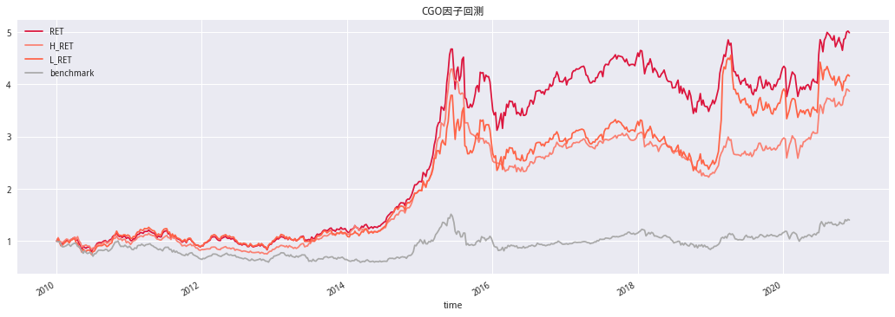
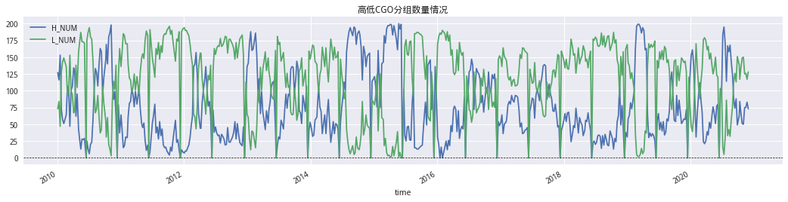
处置效应与新增信息定价的迟滞#
根据有效市场假说，新增信息（如业绩超预期）会被瞬间定价。然而受到处置 效应的影响，股价并不会如理想状态所设想的那样快速调整到新的合理价位。 在某些特定状态下，投资者对新增信息反应不足导致价格调整的更为缓慢，使 得收益预测性更强。具体影响方式我们分情况讨论： 新增信息为负面消息：1）如果投资者以 16 块的成本买入股票 S，当前股价为 13 元，账面浮亏。若当前突发一负面消息，该因素参与定价后的公允价值应当 为 11 元。有效市场下的股价将快速调整到位。然而，由于投资者对确认亏损的 抵触心理，延缓出售，人为减少了市场上 S 股票的供应，由供求关系可知，此间价格会会被高估，导致预期收益相对更低。最终价格会缓慢调整到 11 元。该 过程如图 3 的点线所示。 2）如果投资者的成本为 5 块钱，也就是说当负面消息发生时，大部分投资者有 浮盈。根据处置效应，投资者倾向于及时出售股票锁定利润，短时间内市场上 该股票供应充足，加快了股价发现的进程，调整的就更为迅速。 综合 1）、2）两点分析，可以提出假设：账面亏损会延缓负面消息发生后的价格发现的过程，事件发生后价格向下漂移的时间也更为持久。
新增信息为正面消息：类似的，当投资者处于账面盈利状态时突现利好消息，投资者倾向于落袋为安。而短时间内抛压增大会导致股价相对低 估，未来收益就更高，后续价格会继续向上漂移，直至调整到位。而如果账面 收益为负，投资者倾向于继续持有，市场不会面临额外的抛压，价格也就调整的更加迅速。
小结：综合以上两点，我们可以提出假设：由于处置效应的存在，当价格调整 方向与当前账面收益情况一致时，事件后的价格漂移现象会更加持久。
盈利超预期事件与标准化超预期因子（SUE）#
我们需要将假设中的正面信息与负面信息具体化，本报告针对盈利超预期这一 事件进行研究，而根据国外文献经验，研究结论对其他类似事件具有推广性。 考虑到数据的覆盖度及易得性，本文采用标准化盈利超预期因子（Standardized Unexpected Earnings, SUE）作为超预期的度量。用带漂移项的季节性随机游走模型对季度净利润建模，得出预期净利润，而后对超预期值做标准化处理。
\(E_{i,t}:当季度净利润\) \(C_{i,t}:漂移项,E_{i,q}-E_{i,1-4}均值\) \(\sigma_{i,t}:E_{i,q}-E_{i,q-4}标准差\)
该因子常被用于盈余漂移现象的研究(Post Earning Announcement Drift， PEAD),因子化也有较好的表现。
感兴趣可以参阅Bernard and Thomas (1989)自行了解。
设计实验
我们得出以下两点假设：
正面信息在未实现盈利（CGO）较高分组中价格向上漂移更为持久。
负面信息在未实现盈利（CGO）较低分组中价格向下漂移更为持久。
A组：
做多: SUE前 20%+CGO/RCGO前 20%
做空：SUE后 20%+CGO/RCGO后 20%
B组：
做多：SUE前 20%+CGO/RCGO后 20%
做空：SUE后 20%+CGO/RCGO前 20%
成分股处理非 ST、上市满三年、及调仓日非停牌
'''因子获取'''
def get_test_data(symbol: str, start: str, end: str) -> pd.DataFrame:
periods = GetTradePeriod(start, end, 'ME') # 获取调仓片段
df_list = []
for watch_date in tqdm_notebook(periods, desc='因子获取中'):
stocks = get_stockpool(
symbol, watch_date.strftime('%Y-%m-%d')) # 成分股获取
factor_list = [CGO_20(), SUE0(), R20(), R375(), TURNOVER(), LOGCAP()]
df_list.append(dict2frame(calc_factors(
stocks, factors=factor_list, start_date=watch_date, end_date=watch_date)))
factor_df = pd.concat(df_list, axis=1)
factor_df = factor_df.stack()
factor_df.index.name = ['time', 'code']
return factor_df.unstack()
'''因子构建'''
# SUE因子构建
class SUE0(Factor):
'''含漂移项'''
name = 'SUE0'
max_window = 1
global fields
# 获取T至T-7 共计8期
fields = [f'net_profit_{i}' if i != 0 else 'net_profit' for i in range(8)]
dependencies = fields
def calc(self, data):
# 数据结构为 columns为 net_profit至net_profit_7
df = pd.concat([v.T for v in data.values()], axis=1)
df.columns = fields
df.fillna(0, inplace=True)
# 漂移项可以根据过去两年盈利同比变化Q{i,t} - Q{i,t-4}的均值估计
# 数据结构为array
tmp = df.iloc[:, 1:-4].values - df.iloc[:, 5:].values
C = np.mean(tmp, axis=1) # 漂移项 array
epsilon = np.std(tmp, axis=1) # 残差项epsilon array
Q = df.iloc[:, 4] + C # 带漂移项的季节性随机游走模型
return (df.iloc[:, 0] - Q) / epsilon
class CGO_20(Factor):
'''计算窗口为60的CGO因子'''
import warnings
warnings.filterwarnings("ignore")
name = 'CGO_20'
max_window = 20
dependencies = ['close','turnover_ratio','money','volume']
def calc(self,data):
avg = data['money'] / data['volume'] # 数据索引不是日期!!!
turnover = data['turnover_ratio'] / 100
turnover_weighs = turnover.apply(calc_turnover_weight)
# 归一化
scale_weights = turnover_weighs.div(turnover_weighs.sum())
avg.index = scale_weights.index # 设置索引
rp_price = (scale_weights * avg).sum() # 参考价格
return data['close'].iloc[-1] / rp_price - 1
class R20(Factor):
name = 'R20'
max_window = 20
dependencies = ['close']
def calc(self,data):
return data['close'].iloc[-1] / data['close'].iloc[0] - 1
class R375(Factor):
name = 'R375'
max_window = 375
dependencies = ['close']
def calc(self,data):
return data['close'].iloc[-1] / data['close'].iloc[0] - 1
class TURNOVER(Factor):
name = 'TURNOVER'
max_window = 20
dependencies = ['turnover_ratio']
def calc(self,data):
return data['turnover_ratio'].mean()
class LOGCAP(Factor):
'''
其实可以直接用get_factors获取size
但是这样想统一用calc_factor获取
'''
name = 'LOGCAP'
max_window = 1
dependencies = ['market_cap']
def calc(self,data):
return np.log(data['market_cap']).iloc[-1]
'''获取过滤后的成分股'''
def get_stockpool(symbol:str,watch_date:str)->list:
'''获取股票池'''
if symbol == "A":
stockList = get_index_stocks('000002.XSHG', date=watch_date) + get_index_stocks(
'399107.XSHE', date=watch_date)
else:
stockList = get_index_stocks('000002.XSHG', date=watch_date)
stockList = del_st_stock(stockList,watch_date)
stockList = del_iponday(stockList,watch_date,3 * 244)
stockList = del_paused(stockList,watch_date)
return stockList
def del_st_stock(securities: list, watch_date: str) -> list:
'''过滤ST股票'''
info_ser = get_extras('is_st', securities,
end_date=watch_date, df=True, count=1).iloc[0]
return info_ser[info_ser == False].dropna().index.tolist()
def del_iponday(securities: list, watch_date: str, N: int=60) -> list:
'''返回上市大于N日的股票'''
return list(filter(lambda x: (parse(watch_date).date() - get_security_info(x, date=watch_date).start_date).days > N, securities))
def del_paused(securities: list, watch_date: str, N: int=21) -> list:
'''返回N日内未停牌的股票'''
pausd_df = get_price(securities, end_date=watch_date,
count=N, fields='paused', panel=False)
cond = pausd_df.groupby('code')['paused'].sum()
return cond[cond == 0].dropna().index.tolist()
# Fama_MacBeth
class fama_macbeth_regr(object):
'''
结果为经Newey West调整的后的结果
代码参考https://bashtage.github.io/linearmodels/panel/models.html#linearmodels.panel.model.FamaMacBeth
经测试与limearmodel结果一致
================
df数据结构 MultiIndex level0-time,level1-code 必须要有NEXT_RET,
----------------------------------------------------------------
time | code |A_FACTOR|B_FACTOR|...|E_FACTOR| NEXT_RET
-----------|-----------|----------------------------------------
2014-01-02|000001.XSHE| -0.038 | 0.192 |...| 1.056 | -0.045
|-----------|----------------------------------------
|000002.XSHE| -0.122 | 0.153 |...| 0.610 | -0.064
----------------------------------------------------------------
===============
仅做简单的缺失值处理后就进行回归
'''
def __init__(self, df: pd.DataFrame) -> None:
# 简单的去除缺失值
col = [i for i in df.columns if i != "NEXT_RET"]
X = df[col]
X = X.replace([-np.inf, np.inf], np.nan)
X = X.fillna(0)
X['CONST'] = 1 # 加入const
self.X = X[['CONST'] + col]
self.y = df['NEXT_RET'].fillna(0)
def fit(self) -> None:
X = self.X
y = self.y
xy = pd.concat([X, y], axis=1)
self.all_df = xy
# 回归项
self.all_params = xy.groupby(level='time').apply(self.regr_ols)
self._params = self.all_params.mean(0).values[:, None] # beta项
@property
def get_paramser(self) -> pd.Series:
return self.all_params.mean()
@property
def pvalues(self) -> pd.Series:
from scipy import stats
abs_tstats = np.abs(self.get_tstats)
return pd.Series(2 * (1 - stats.t.cdf(abs_tstats, self.get_resids.shape[0])),
index=abs_tstats.index,
name='pvalues')
@property
def get_tstats(self) -> pd.Series:
'''获取T值'''
return self.get_paramser / self.get_stderr
@property
def get_stderr(self) -> pd.Series:
# std.error
e = self.all_params - self.all_params.mean(axis=0).T
e = e[np.all(np.isfinite(e), 1)]
nobs = e.shape[0]
T = len(self.y)
# Bartlett,NeweyWest取法
bw = int(np.ceil(4 * (T / 100) ** (2 / 9))) # L项
w = self.kernel_weight_bartlett(bw)
# Newey West
cov = self.cov_kernel(e.values, w)
std_error = np.sqrt(np.diag(cov / (nobs - 1))) # 标准误
return pd.Series(std_error, index=self.all_params.columns)
@property
def get_resids(self) -> pd.Series:
'''残差'''
ser = self.y - (self.X @ self._params).iloc[:, 0]
ser.name = 'resids'
return ser
@property
def get_rsquare(self) -> float:
y = self.y
weps = self.get_resids # y - (X @ params).iloc[:, 0]
residual_ss = float(weps.T @ weps)
w = np.ones(y.shape[0])
# 在有const时e的计算 否在e=y
e = y - (w * y).sum() / w.sum()
total_ss = float(w.T @ (e ** 2))
# R方
r2 = 1 - residual_ss / total_ss
return r2
@staticmethod
def regr_ols(df: pd.DataFrame) -> pd.Series:
'''OLS回归'''
select_col = [col for col in df.columns if col != "NEXT_RET"]
exog = df[select_col]
dep = df['NEXT_RET']
if exog.shape[0] < exog.shape[1] or np.linalg.matrix_rank(exog) != exog.shape[1]:
return pd.Series([np.nan] * len(exog.columns), index=exog.columns)
params = np.linalg.lstsq(exog, dep, rcond=None)[0]
return pd.Series(params, index=select_col)
@staticmethod
def cov_kernel(z: np.array, w: np.array) -> np.array:
k = len(w)
n = z.shape[0]
if k > n:
raise ValueError(
"Length of w ({0}) is larger than the number "
"of elements in z ({1})".format(k, n)
)
s = z.T @ z
for i in range(1, len(w)):
op = z[i:].T @ z[:-i]
s += w[i] * (op + op.T)
s /= n
return s
@staticmethod
def kernel_weight_bartlett(bw: float) -> np.array:
return 1 - np.arange(int(bw) + 1) / (int(bw) + 1)
# 因子获取
monthly_data = get_test_data('000906.XSHG','2010-01-01','2020-11-30')
# 查询结构
monthly_data.head()
| CGO_20 | LOGCAP | R20 | R375 | SUE0 | TURNOVER | ||
|---|---|---|---|---|---|---|---|
| time | code | ||||||
| 2010-01-29 | 600000.XSHG | -0.040580 | 7.457295 | -0.074110 | 0.257641 | -1.088559 | 1.115330 |
| 600004.XSHG | 0.003352 | 4.813525 | 0.054846 | 0.032353 | -0.710342 | 1.607835 | |
| 600005.XSHG | -0.103483 | 6.274089 | -0.172450 | -0.318910 | 1.316944 | 2.300220 | |
| 600006.XSHG | -0.112183 | 4.757033 | -0.157872 | 0.442018 | 3.084556 | 0.904965 | |
| 600007.XSHG | -0.025512 | 4.697686 | -0.081758 | -0.069859 | 0.361250 | 0.466340 |
# 因子储存
monthly_data.to_csv('../../Data/monthly_data.csv')
# 因子读取
monthly_data = pd.read_csv('../../Data/monthly_data.csv',index_col=[0,1],parse_dates=[0])
# 获取周度节点
monthly = GetTradePeriod('2010-01-01','2020-11-30','ME')
# 每月度收益 手动加入最后一期
next_return = pricing.loc[monthly + [datetime.date(2020, 12, 7)]].pct_change().shift(-1)
next_return.index = pd.to_datetime(next_return.index)
monthly_data['NEXT_RET'] = next_return.stack() # 加入
前期收益越高则CGO越大。大市值的股票CGO较大，体现了大盘股相对小盘股投资者拿的住的特点。换手率指标在加入对数市值后影响不显著。
# Fama-MacBeth回归分析
test_col = (
['CGO_20', 'R20', 'R375'],
['CGO_20', 'R20', 'R375', 'TURNOVER'],
['CGO_20', 'R20', 'R375', 'TURNOVER','LOGCAP'])
df_list = [] # 储存beta值
r2_list = [] # 储存R方
p_list = [] # 储存P-value
for i in test_col:
model = fama_macbeth_regr(monthly_data[i + ['NEXT_RET']])
model.fit()
p_list.append(model.pvalues.reindex(['CGO_20', 'R20', 'R375', 'TURNOVER','LOGCAP']))
df_list.append(model.get_paramser.reindex(['CGO_20', 'R20', 'R375', 'TURNOVER','LOGCAP']))
r2_list.append(model.get_rsquare)
table = pd.concat(df_list,axis=1).iloc[1:]
table.columns = range(1,4)
table.loc['R_square'] = r2_list
(table.style.format('{:.4f}')
.set_caption('CGO的Fama–MacBeth回归分析结果'))
| 1 | 2 | 3 | |
|---|---|---|---|
| R20 | -0.0341 | -0.0168 | -0.0177 |
| R375 | -0.0007 | 0.0007 | 0.0005 |
| TURNOVER | nan | -0.0016 | -0.0017 |
| LOGCAP | nan | nan | 0.0003 |
| R_square | -0.0000 | 0.0002 | -0.0001 |
# P值
p_df = pd.concat(p_list,axis=1).iloc[1:]
p_df.columns = range(1,df.shape[1]+1)
(p_df.style.format('{:.3f}')
.set_caption('CGO的Fama–MacBeth回归的P值')
.applymap(lambda x:'font-weight:bold' if x >0.05 else ''))
| 1 | 2 | 3 | |
|---|---|---|---|
| R20 | 0.000 | 0.024 | 0.016 |
| R375 | 0.775 | 0.779 | 0.821 |
| TURNOVER | nan | 0.000 | 0.000 |
| LOGCAP | nan | nan | 0.765 |
查看SUE因子月度收益情况及单调性,总的来说SUE因子单调性不错
# SUE因子
sue_factor = test_data[['SUE0','NEXT_RET']].copy()
sue_factor.columns = ['factor',1]
sue_factor['factor_quantile'] = pd.qcut(sue_factor['factor'],5,labels=range(1,6))
sue_factor.index.names = ['date','asset']
mean_quant_ret, std_quantile = al.performance.mean_return_by_quantile(
sue_factor,
by_group=False,
demeaned=True,
group_adjust=False, # 是否行业中性化
)
plt.rcParams['font.family'] = 'serif'
mean_quant_ret.plot.bar(title='SUE因子收益：分组平均超额收益（收益中心化处理）')
<matplotlib.axes._subplots.AxesSubplot at 0x7fc2f3b52ba8>
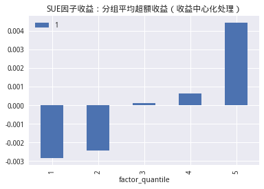
多空组合示意
高CGO |
低CGO |
|
|---|---|---|
高SUE |
A 组多头：强价格上涨 |
B 组空头：弱价格上涨 |
低SUE |
B 组多头：弱价格下跌 |
A 组空头：强价格下跌 |
低CGO高SUE相当于是一个戴维斯双击。
# 计算组合多空净值
def get_speard_portfolio(data: pd.DataFrame,l_col:str,s_col:str, long: str, short: str) -> pd.DataFrame:
'''
data:MultiIndex level0-time,level1-code
'''
df = data.copy()
CGO_G = df.groupby(level='time')[l_col].transform(
lambda x: pd.qcut(x, 5, labels=['G%s' % i for i in range(1, 6)]))
SUE_G = df.groupby(level='time')[s_col].transform(
lambda x: pd.qcut(x, 5, labels=['S%s' % i for i in range(1, 6)]))
df['GROUP'] = SUE_G.astype(str) + CGO_G.astype(str)
group_df = df.query('GROUP == @long or GROUP == @short')
returns = group_df.groupby([pd.Grouper(level='time'), pd.Grouper(key='GROUP')])[
'NEXT_RET'].mean()
returns = returns.unstack()
returns = returns.fillna(0)
returns['excess_returns'] = returns[long] - returns[short]
returns.rename(columns={long:'long',short:'short'},inplace=True)
return returns
# 计算分组收益
A_speard_df = get_speard_portfolio(monthly_data,'CGO_20','SUE0','S5G5','S1G1')
B_speard_df = get_speard_portfolio(monthly_data,'CGO_20','SUE0','S1G5','S5G1')
# 画图
plt.rcParams['font.family'] = 'serif'
plt.figure(figsize=(14, 4))
plt.subplot(121)
plt.title('A组净值')
plt.plot(np.exp(np.log1p(A_speard_df).cumsum()))
plt.legend(['long', 'short', 'excess_returns'])
plt.subplot(122)
plt.title('B组净值')
plt.plot(np.exp(np.log1p(B_speard_df).cumsum()))
plt.legend(['long', 'short', 'excess_returns'])
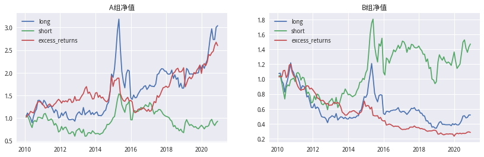
表中数据均为投资组合的月均超额收益,括号内为 t 值，标黑为5%置信度下显著异于零。
# A组
a_return_avg = A_speard_df.mean()
a_return_avg.name = 'mean'
a_table = pd.concat([A_speard_df.apply(lambda x:pd.Series(stats.ttest_1samp(x, 0), index=['tstats', 'pvalues'])).T,
a_return_avg], axis=1)
a_table.index = ['A_' + i for i in a_table.index.tolist()]
# B组
b_return_avg = B_speard_df.mean()
b_return_avg.name = 'mean'
b_table = pd.concat([B_speard_df.apply(lambda x:pd.Series(stats.ttest_1samp(x, 0), index=['tstats', 'pvalues'])).T,
b_return_avg], axis=1)
b_table.index = ['B_' + i for i in a_table.index.tolist()]
table = pd.concat([a_table, b_table]).T
# 可视化显示
tmp_ser = table.apply(lambda x: '{0[0]:.3f}_{0[1]:.3f}_{0[2]:.4f}'.format(x))
(tmp_ser.to_frame(1).T.style.format(lambda x: '{0[2]} ({0[0]})'.format(x.split('_')))
.applymap(lambda x: 'font-weight:bold' if float(x.split('_')[1]) > 0.05 else '')
.set_caption('CGO指标的测试结果'))
| A_long | A_short | A_excess_returns | B_A_long | B_A_short | B_A_excess_returns | |
|---|---|---|---|---|---|---|
| 1 | 0.0116 (1.698) | 0.0028 (0.394) | 0.0088 (1.881) | -0.0020 (-0.296) | 0.0065 (0.881) | -0.0084 (-2.020) |
# 获取多空净值
speard_df = pd.concat([A_speard_df['excess_returns'],
B_speard_df['excess_returns']],axis=1)
speard_df.columns = ['A_L/S','B_L/S']
# 计算累计净值
cum = np.exp(np.log1p(speard_df).cumsum())
# 获取基准
benchmark = get_price('000300.XSHG', '2010-01-01',
'2020-11-30', fields='close')
benchmark = benchmark.reindex(cum.index)
benchmark = (benchmark['close'] / benchmark['close'][0])
# 画图
cum.plot(figsize=(18,5),title='多空收益净值曲线',color=['Crimson', 'Salmon'])
benchmark.plot(label='benchmark',color='DarkGray')
plt.axhline(1,color='black',lw=0.65,ls='--')
plt.legend();
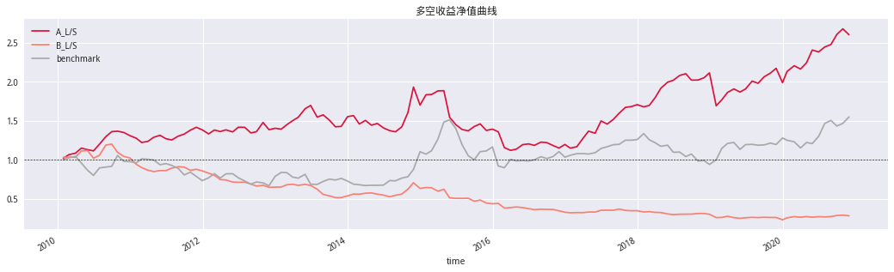
我们将CGO对市值、R375这两个显著的指标进行截面回归，得到残差,命名为残差未实现盈利(Residual Capital Gain Overhang, RCGO)
# 计算RCGO
def calc_rcgo(df:pd.DataFrame,target:str,edog:list)->pd.Series:
'''计算RCGO'''
def calc_resid(df:pd.DataFrame)->pd.Series:
beta = np.linalg.lstsq(df[edog],df[target])[0]
return df[target] - df[edog] @ beta
ser = df.groupby(level='time',group_keys=False).apply(calc_resid)
ser.name = 'RCGO'
return ser
# 计算RCGO
monthly_data['RCGO'] = calc_rcgo(monthly_data,'CGO_20',['R375','LOGCAP'])
# 计算组合收益
A_speard_df = get_speard_portfolio(monthly_data,'RCGO','SUE0','S5G5','S1G1')
B_speard_df = get_speard_portfolio(monthly_data,'RCGO','SUE0','S1G5','S5G1')
# 画图
plt.rcParams['font.family'] = 'serif'
plt.figure(figsize=(14, 4))
plt.subplot(121)
plt.title('A组净值')
plt.plot(np.exp(np.log1p(A_speard_df).cumsum()))
plt.legend(['long', 'short', 'excess_returns'])
plt.subplot(122)
plt.title('B组净值')
plt.plot(np.exp(np.log1p(B_speard_df).cumsum()))
plt.legend(['long', 'short', 'excess_returns'])
<matplotlib.legend.Legend at 0x7fed24cf5c88>
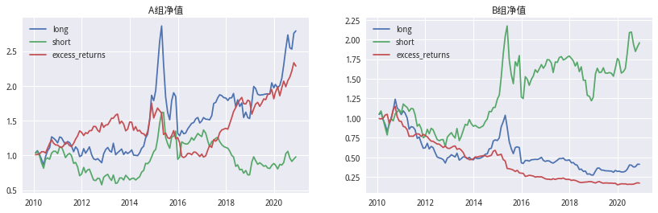
表中数据均为投资组合的月均超额收益,括号内为 t 值，标黑为5%置信度下显著异于零
# A组
a_return_avg = A_speard_df.mean()
a_return_avg.name = 'mean'
a_table = pd.concat([A_speard_df.apply(lambda x:pd.Series(stats.ttest_1samp(x, 0), index=['tstats', 'pvalues'])).T,
a_return_avg], axis=1)
a_table.index = ['A_' + i for i in a_table.index.tolist()]
# B组
b_return_avg = B_speard_df.mean()
b_return_avg.name = 'mean'
b_table = pd.concat([B_speard_df.apply(lambda x:pd.Series(stats.ttest_1samp(x, 0), index=['tstats', 'pvalues'])).T,
b_return_avg], axis=1)
b_table.index = ['B_' + i for i in a_table.index.tolist()]
table = pd.concat([a_table, b_table]).T
# 可视化显示
tmp_ser = table.apply(lambda x: '{0[0]:.3f}_{0[1]:.3f}_{0[2]:.4f}'.format(x))
(tmp_ser.to_frame(1).T.style.format(lambda x: '{0[2]} ({0[0]})'.format(x.split('_')))
.applymap(lambda x: 'font-weight:bold' if float(x.split('_')[1]) > 0.05 else '')
.set_caption('RCGO指标的测试结果'))
| A_long | A_short | A_excess_returns | B_A_long | B_A_short | B_A_excess_returns | |
|---|---|---|---|---|---|---|
| 1 | 0.0108 (1.627) | 0.0032 (0.446) | 0.0076 (1.742) | -0.0037 (-0.553) | 0.0086 (1.183) | -0.0123 (-3.001) |
# 获取多空净值
speard_df = pd.concat([A_speard_df['excess_returns'],
B_speard_df['excess_returns']],axis=1)
speard_df.columns = ['A_L/S','B_L/S']
# 计算累计净值
cum = np.exp(np.log1p(speard_df).cumsum())
# 获取基准
benchmark = get_price('000300.XSHG', '2010-01-01',
'2020-11-30', fields='close')
benchmark = benchmark.reindex(cum.index)
benchmark = (benchmark['close'] / benchmark['close'][0])
# 画图
cum.plot(figsize=(18,5),title='多空收益净值曲线',color=['Crimson', 'Salmon'])
benchmark.plot(label='benchmark',color='DarkGray')
plt.axhline(1,color='black',lw=0.65,ls='--')
plt.legend();
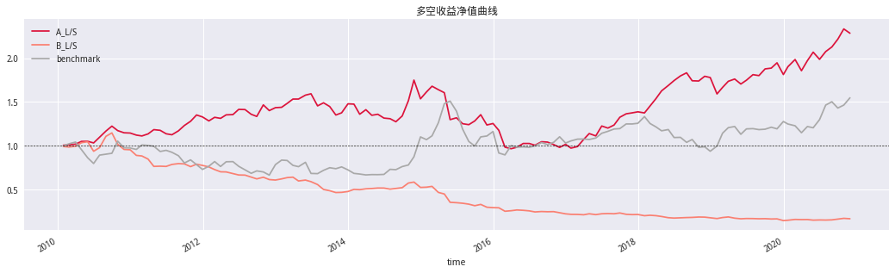